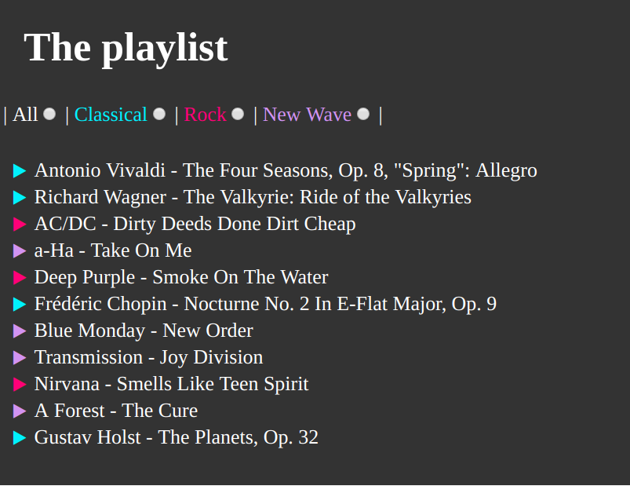
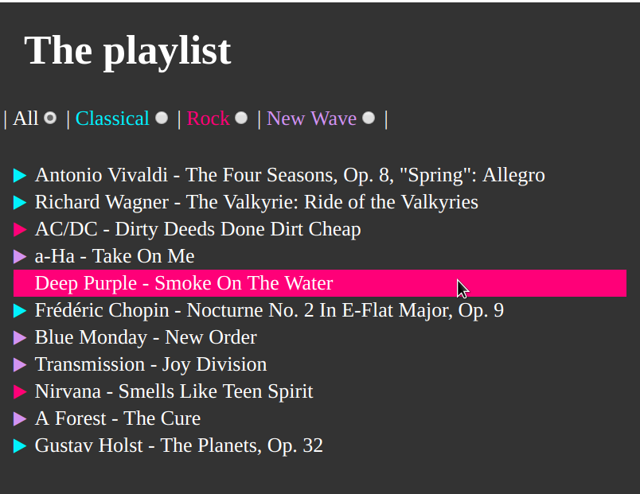
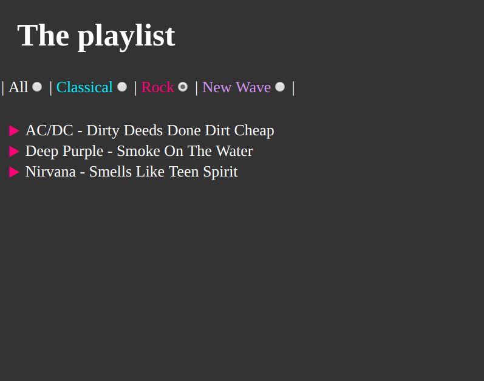
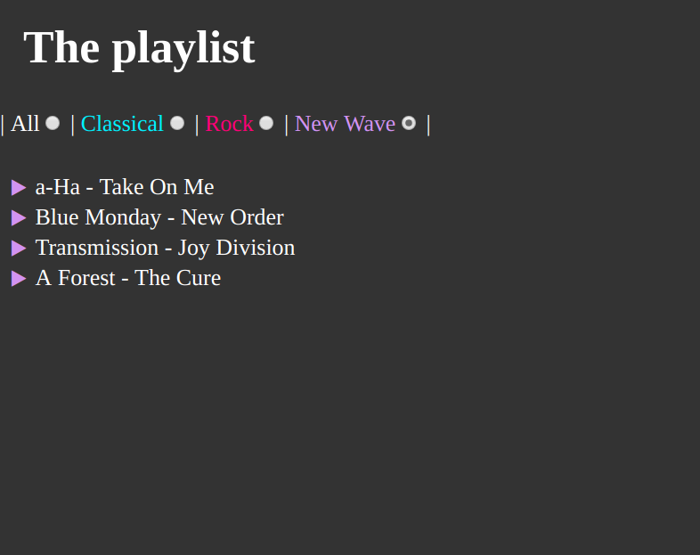

Bring Semantic to the Web
Created for
Created by

The Semantic Web! What? Why? When?
The Semantic Web! What? Why? When?
The Ultimate Goal
- Machines that are able to understand human's queries and needs for information.
- Two approaches:
- Intelligent Search Engines (involves ML, NLP, AI)
- The Semantic Web
What is the Semantic Web?
"Leaving aside the artificial intelligence problem of training machines to behave like people, the Semantic Web approach instead develops languages for expressing information in a machine processable form"Semantic Web Road map by Tim Berners-Lee, 1998
What Semantic Web is Not?
- "A Semantic Web is not Artificial Intelligence"
"Semantic Web only indicates a machine's ability to solve a well-defined problem by performing well-defined operations on existing well-defined data. Instead of asking machines to understand people's language, it involves asking people to make the extra effort"What Semantic Web is Not (TBL, 1998)
{kind=link}
Semantic Web in today world
- A W3C’s Standards
- Google's Knowledge Vault
- ex Knowledge Graph
- Semantic Web SEO
HTML5 Semantic elements - the right usage and SEO considerations.
HTML5 Semantic elements - the right usage and SEO considerations.
Overview
- Most of the elements defined in HTML5 are semantic
- h1-h6, video, ul, input, option, select, etc.
- I.e. elements are used according to their meaning, not because of the way they appear visually
- But the Structural (Layout) elements: div and span are not.
- HTML5 brings Semantic Structural Elements
- Elements, that mark up the structure of the Web content using the appropriate semantic elements
Note about "custom elements"
- HTML5 is a predefined, restricted set of HTML elements
- Tags like:
<person>, <developer>, ...will be ignored by the browsers. - But we can define our custom elements in the DOM
- Custom Elements @whatwg
- Custom Elements @w3c
- Custom Elements are part of a bigger effort: the Web Components, which will be discussed in next lectures.
- Reference: Web Components @MDN
- Discuss: Custom (DOM) Elements vs HTML elements in the context of SEO
Resources
Data Attributes in HTML5.
Data Attributes in HTML5.
Overview
- data-* attributes allow us to store extra information on regular, semantic HTML elements without other hacks such as non-standard attributes, extra properties on DOM, or Node.setUserData().
- Shortly, they allows us to embed custom, non-visible data
- Usually used with JS
Syntax
<tag data-something="value"></tag>
<!-- or if we need a boolean data-attribute (i.e. 'on'/'off') -->
<tag data-something></tag>
- Where something must be:
- at least 1 symbol
- should not start with 'xml'
- tt can contain only letters, numbers, dashes (-), periods (.), colons (:), and underscores (_). Any ASCII capital letters (A to Z) are ignored and converted to lowercase.
- More on naming: data-* attributes @w3c
- Every HTML element may have any number of data attributes specified, with any value.
<li data-isbn="0385333498" data-book-id='1'>The Sirens of Titan</li>
<li data-isbn="0141189347" data-book-id="2" data-selected>Cat's Cradle</li>
Benefits
- To replace the usage of HTML classes/id for storing data
- The purpose of
class/idattribute is for styling - We can put as many
data-*attributes as we need - Easy access of the
data-*values in JavaScript - Of course, we can use them for styling purposes, as well, using CSS Attribute Selectors
Example: data-* attributes with CSS pseudo-elements
See the Pen data-* attributes with pseudo-elements by Iva Popova (@webdesigncourse) on CodePen.
Styled Tooltips Using Psuedo Elements
Example from Styled Tooltips Using Psuedo Elements by CSS-Tricks Team (@css-tricks) on CodePen.
Access data-* attributes in JavaScript
// read data-something value
let valueSomething = element.dataset.something;
// write to data-something value
element.dataset.something = 'xyz'
// read data-something-else value
let valueSomethingElse = element.dataset.somethingElse;
// write to data-something-else value
element.dataset.somethingElse = 9;
Note, that when the part after data- prefix contains dashes it is converted to Camel Case and dashes are removed.
Example: Access data-* attributes in JavaScript
See the Pen read/write data-* attributes by Iva Popova (@webdesigncourse) on CodePen.
Example: Access data-* attributes in JavaScript
See the Pen Access data-* with JS by Iva Popova (@webdesigncourse) on CodePen.
Resources
Exersises
Task - Restaurant Menu
Task - Restaurant Menu
- Implement the simple menu ordering page, as given in the gif bellow
- Try to improve the User Experience.
{kind=link}
Task - Simple Playlist
Task - Simple Playlist
- Imagine, you have to code a simple music player
- For now, we are only interested in next UI components:
- Genre Selection Radio Buttons
- Playlist (Track list)
- Note that the playlist will consist of tracks from different genres!
- Each track is associated with a genre using the
data-genreattribute.
- No fancy CSS, yet. Just the mains
- A screenshot of the initial view: 
- But you'll have to use different colors for each genre!
{kind=link}
- A screenshot of the initial view, when hover on a track: 
{kind=link}
- Your main task will be to implement the "filter by genre" functionality
- For instance, if the user have checked the "Rock" radio button, only the tracks assosiated with this genre should be listed
- A screenshot of "filter by Rock" 
{kind=link}
- A screenshot of "filter by New Wave" 
{kind=link}
Advanced Task
- You can attach a
data-track_lenghtattribute for each track. - And display the total play time of the current tracks
These slides are based on
customised version of
framework